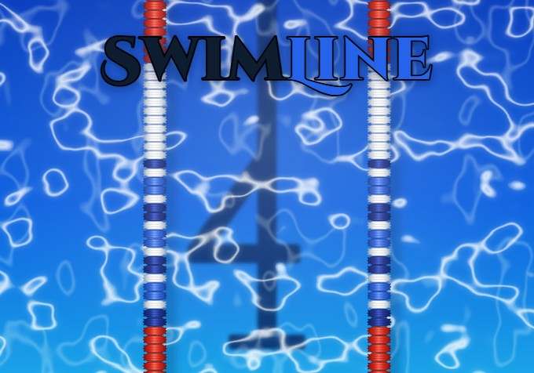

Stesso allenamento finto per tutte e tre: 2,6 km, difficoltà 4,3, miglior tempo 29"84 sui 50 stile, 1 record. Formato storia Instagram 1080×1920. Aggiungi ?vera all'indirizzo per vederle a grandezza piena.
Sabato 28 novembre

SwimLine4Sab 28/11
Sabato 28 novembre